Items
Black coffee
Espresso
Americano
 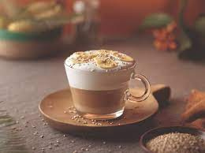
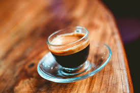
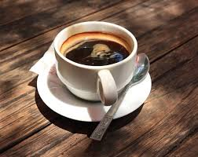
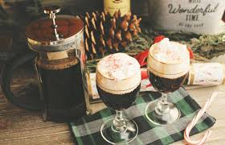
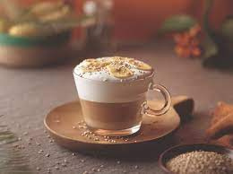
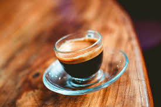
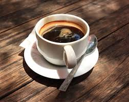
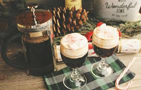

Irish Coffee
Cortado
cappuccino
Café Coffee Day, a part of Coffee Day Global Limited, is India’s favourite hangout for coffee and conversations. Popularly known as CCD, we strive to provide the best experience to our guests. Our coffees are sourced from thousands of small coffee planters, who made us who we are today and we're glad to be a part of their lives. We opened our first cafe in 1996 at Brigade Road in Bangalore – the youth and the young at heart immediately took to the cafe, and it continues to be one of the most happening places in the city. CCD to the youth is a “hangout” spot where they meet people, make conversations, and have a whole lot of fun over steaming cups of great coffee.It's been an exciting journey since then to becoming the largest organised retail cafe chain in the country. We’re also present in Austria, Czech Republic and Malaysia, so if your travel takes you there, do stop by our outlets to get a taste from back home!
Black coffee
Espresso
Americano
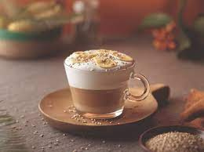
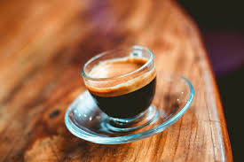
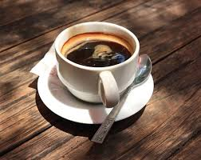
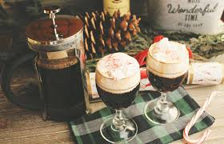
Irish Coffee
Cortado
cappuccino
Serving your needs to make your dining experience embrace to its maximum
All of our chefs are experienced in Arabian style food to bring the best version of our food
We assure you that we have taken the entire step to prevent Covid and make your dining a safe and better
Order your food and get it at your doorstep within 30 min from the chef's kitchen to your dining table
Exceptional coffees from around the world. Sourced for the season, roasted at Starbucks Reserve® Roasteries and crafted with care.
ARAKU has developed a range of colourful Italian coffee makers, designed exclusively by Anderssen & Voll. Made in India.